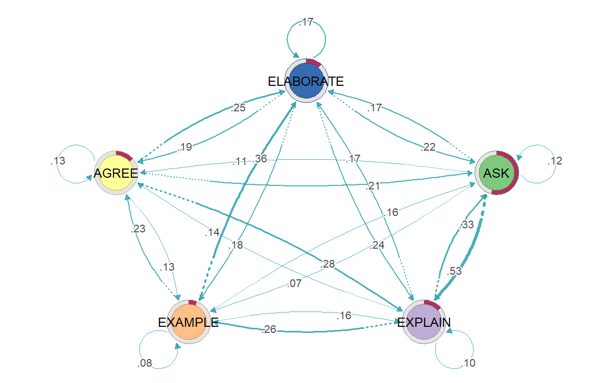
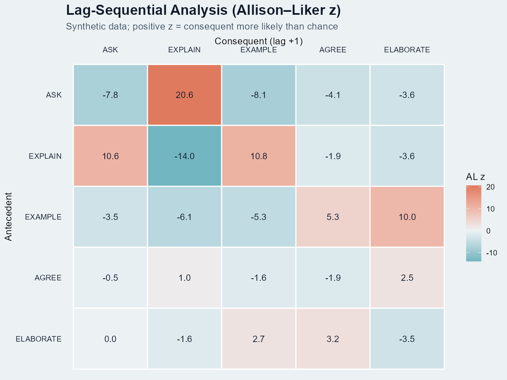
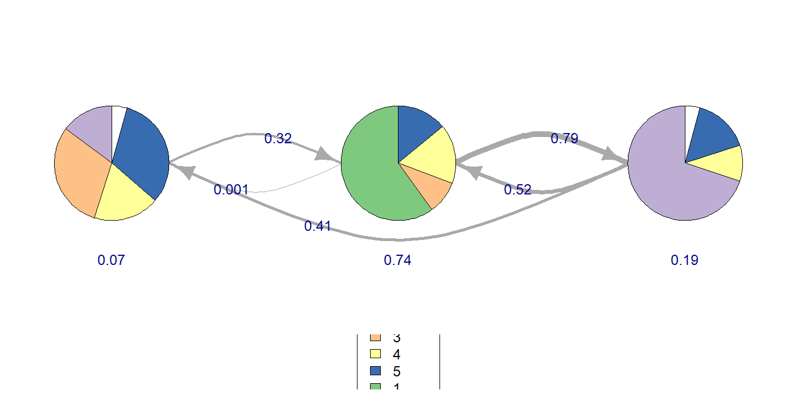
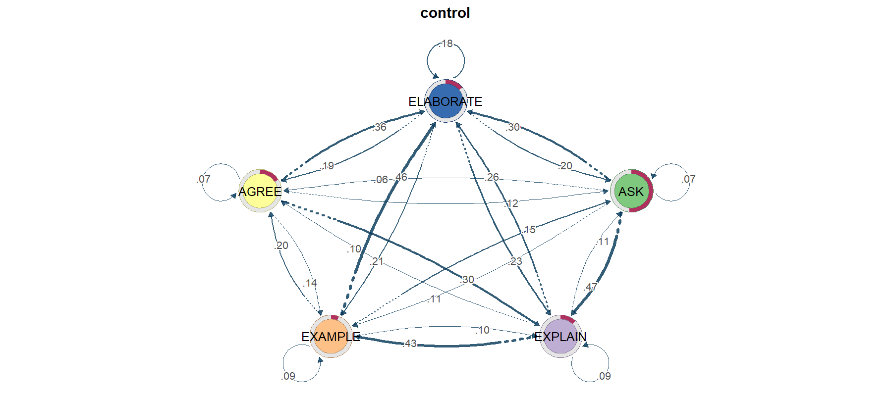

The world of sequence mining — four lenses on the same stream of events.
A friendly map of TNA, Lag Sequential Analysis, Sequential Pattern Mining, and Hidden Markov Models — what each one answers, which R package implements it, and how to read its output. Bundled with a synthetic dialogue dataset and four runnable templates so you can reproduce the example figures here quickly and adapt the workflow to your own data.
Guide author: Jewoong Moon (The University of Alabama, jmoon19@ua.edu)
A friendlier on-ramp to existing tools, not original methodology.
The methods below come from the work of Saqr, López-Pernas, Tikka (TNA), Bakeman, Allison & Liker (LSA), Zaki, Fournier-Viger (SPM), and Helske, Visser (HMM in R). This guide is a practical install + usage walkthrough that bundles a synthetic dataset and parameterised templates. For methodological depth, please cite the original sources in Chapter 10.
Four lenses on one synthetic dialogue dataset



Why a family of methods, not just one?
An event log — classroom turns, clinical actions, MOOC clicks, gameplay moves — is a stream of categorical events ordered in time. Researchers want very different things from the same stream:
- "How likely is each next move given the current one?" → TNA
- "Does B follow A more than chance would predict?" → LSA
- "Which long sub-sequences recur across many sessions?" → SPM
- "Are observed moves driven by a few hidden cognitive states?" → HMM
Each method makes different assumptions and produces a different artefact. Treating them as competitors is a category error — they answer different questions. The next chapter maps method to question.
Method × question decision tree
| Your question | Method | R package | Output you'll get |
|---|---|---|---|
| "What's the typical flow between codes?" | TNA | tna | Directed weighted graph with centrality + bootstrap stability |
| "Did groups differ in their flow structure?" | TNA (group) | tna::group_model | Per-group networks + permutation contrast |
| "Does B significantly follow A at lag 1?" | LSA | LagSequential / custom z | z-score matrix per lag |
| "Which 3-step patterns recur in ≥ 30% of sessions?" | SPM | arulesSequences (cSPADE) | Ranked list of frequent ordered patterns |
| "Are there latent states behind the codes?" | HMM | seqHMM / depmixS4 | K hidden states + transition + emission matrices |
| "Do hidden states differ by group / covariates?" | Mixture HMM | seqHMM::build_mhmm | Sub-populations with distinct dynamics |
| "How long does each state typically last?" | Semi-Markov | mhsmm | State + duration distributions |
Visual decision tree
Confirmatory hypothesis
You wrote a hypothesis like "after teacher feedback, students respond more often than chance." → LSA with the Allison–Liker correction.
Exploratory mapping
You don't know what to expect. You want to see the dialogue's "shape" — which moves dominate, which transitions are typical. → TNA.
Pattern discovery
You suspect specific motifs (ASK→EXPLAIN→EXAMPLE) repeat across many sessions and you want to rank them. → SPM.
Why ordinary IID statistics are often the wrong starting point
Many standard statistical procedures quietly assume that observations are independent and identically distributed (IID), or at least close enough that large-sample approximations behave well. Sequence data usually break that intuition. In an event stream, what happens at time t is often constrained by what happened at t-1, t-2, or by the broader local state of the interaction.
Order is not noise in sequence data. Order is the object of study.
If you collapse the sequence into totals or proportions too early, you destroy the very dependence structure you are trying to analyze. Sequence methods exist because temporal dependence is meaningful, not because it is a nuisance to be averaged away.
So does the central limit theorem fail?
Not exactly. The central limit theorem is not simply "false" for all dependent data, but you do not get to assume the simple IID version by default. Some dependent processes still admit asymptotic normality under additional mixing or stationarity conditions, but most applied behavioral datasets do not justify that leap automatically. Classroom talk, gameplay actions, clinical routines, and clickstreams are often path-dependent, bursty, and heterogeneous across sessions.
That is why sequence analysis often leans on resampling, permutation, simulation, or model-based likelihood logic instead of casually treating every event as if it were an independent draw from one big population.
Naive event-level tests
If you run a standard test on raw event counts as though every turn were independent, standard errors can look too small and effects can look too certain. The dependence inflates the apparent sample size.
What null structure is plausible?
For process data, the right question is often not "is the mean different?" but "different from what kind of ordered null process?" That is where permutation and sequence-specific null models become useful.
Why permutation shows up so often
Permutation logic is attractive in sequence work because it can compare the observed structure to a rearranged world where the target effect is absent, while preserving parts of the data you still believe. For example, you may want to preserve session boundaries, overall code frequencies, or group labels, but break the specific alignment that would make one transition pattern look stronger than another.
That is also why permutation is not one single thing. A good permutation scheme must respect the unit of analysis. Sometimes you permute group labels across sessions. Sometimes you shuffle within session under constraints. Sometimes you simulate from a fitted null process instead of permuting raw events. The right choice depends on which dependence structure you are trying to keep and which structure you are testing against.
When a sequence paper says "permutation test," ask two follow-up questions immediately: what exactly was permuted, and what structure was intentionally preserved?
This mini simulation keeps the session-level scores fixed and shuffles only the group labels. That is the point: preserve the session structure, break the group assignment, and ask how unusual the observed gap looks under that null.
How this maps onto the four methods here
- TNA: often uses bootstrap or permutation-style comparisons because edge weights and centralities come from dependent event transitions, not IID rows.
- LSA: explicitly asks whether an observed lagged transition is above a chance model, so the null model is built into the logic of the z statistic.
- SPM: is descriptive first; the statistical challenge is usually choosing support thresholds and filtering trivial patterns, not pretending the discovered motifs came from IID events.
- HMM: handles dependence by modeling it directly through latent states and transition probabilities rather than pretending successive events are independent.
Treating a sequence dataset like a flat spreadsheet of unrelated rows is usually the fastest way to get misleading certainty. Before testing anything, decide whether the meaningful unit is the event, the session, the transition, or the entire sequence.
A shared dataframe to learn on
Every figure in this guide comes from one synthetic CSV bundled at example_data/fake_dialogue_long.csv. It is not real data — transition matrices were hand-tuned so each method has something interesting to find.
| Column | Type | Carries |
|---|---|---|
| user_id | P001..P100 | Session identifier (50 treatment + 50 control). |
| cond | treatment / control | Group label. |
| turn_idx | int | Monotonic turn index within a session. |
| speaker | A / B | Who spoke this turn. |
| ASK ... ELABORATE | 0 / 1 | One-hot code per turn (5 codes). |
First ten rows
Each row is one turn. The five code columns are 0/1; exactly one is on per turn (in this synthetic data).
user_id, cond, turn_idx, speaker, ASK, EXPLAIN, EXAMPLE, AGREE, ELABORATE
P001, treatment, 1, A, 0, 1, 0, 0, 0
P001, treatment, 2, B, 0, 0, 0, 0, 1
P001, treatment, 3, A, 0, 0, 0, 0, 1
P001, treatment, 4, A, 0, 0, 1, 0, 0
P001, treatment, 5, B, 0, 0, 0, 0, 1
P001, treatment, 6, A, 0, 0, 0, 0, 1
P001, treatment, 7, B, 0, 1, 0, 0, 0
P001, treatment, 8, A, 0, 0, 0, 0, 1
P001, treatment, 9, B, 0, 0, 0, 0, 1
P001, treatment, 10, B, 0, 0, 0, 1, 0
Sample-size cheat sheet
| Method | Practical minimum | Comfortable |
|---|---|---|
| TNA | ~30 sequences per group, ~1,000 transitions total | 100+ sequences for stable bootstrap |
| LSA | Each lag-1 cell expected count ≥ 5 (Bakeman & Quera) | Several hundred coded events per session |
| SPM | 50+ sequences (otherwise “frequent” is unreliable) | Hundreds-thousands; cSPADE shines at scale |
| HMM (K=3-4) | ~100 sequences, ~20 obs/sequence | Mixture HMM needs substantially more |
Per-method, this CSV is reshaped exactly once into the structure that method needs:
| Method | Reshape |
|---|---|
| TNA / HMM | Wide matrix: one row per user_id, columns t1..t60, cells are code names. Built via TraMineR::seqdef(). |
| LSA | Single ordered vector per session, then aggregated lag-1 transitions. |
| SPM | Transaction format: sequenceID eventID size item rows, written to a basket file and read by arulesSequences::read_baskets(). |
Five-minute first figure
Open R. Paste the block. You should see a TNA network of the synthetic data within a minute.
# 1) Install once (skips already-installed) pkgs <- c("tna", "TraMineR", "arulesSequences", "seqHMM", "ggplot2") new <- setdiff(pkgs, rownames(installed.packages())) if (length(new)) install.packages(new, repos = "https://cloud.r-project.org") # 2) Load + grab the bundled fake CSV from GitHub library(tna); library(TraMineR) url <- "https://educatian.github.io/sequence-mining/example_data/fake_dialogue_long.csv" long <- read.csv(url, stringsAsFactors = FALSE) # 3) Reshape one-hot to a single ‘code’ column, then to wide matrix CODES <- c("ASK","EXPLAIN","EXAMPLE","AGREE","ELABORATE") long$code <- CODES[apply(long[, CODES], 1, which.max)] ids <- unique(long$user_id) Lmax <- max(table(long$user_id)) W <- matrix(NA_character_, length(ids), Lmax, dimnames = list(ids, paste0("t", 1:Lmax))) for (uid in ids) { s <- long[long$user_id == uid, ] W[uid, 1:nrow(s)] <- s$code[order(s$turn_idx)] } # 4) Fit + plot seq_obj <- seqdef(W, alphabet = CODES) m <- build_model(seq_obj) plot(m) # your first TNA figure centralities(m) # in/out degree etc.
seq_objYou can immediately call seqfplot(seq_obj) for code-frequency plots and seqIplot(seq_obj) for index plots — from TraMineR. Those visualisations are method-agnostic and worth knowing before any modelling.
TNA — Transition Network Analysis
TNA models your stream as a first-order Markov chain (next state depends only on current state) and renders the resulting transition matrix as a directed weighted graph — with centrality, bootstrap edge stability, community detection, and permutation-based group comparison built in.
"I want a network picture of how my codes flow."
Especially good when you want one figure that summarises an entire cohort's typical dynamics, or when you want to compare the structure of two cohorts.
Use this page as the on-ramp, then jump to the primary TNA materials.
Primer + tutorial: Advanced Learning Analytics Methods, Chapter 15 · Package site: sonsoles.me/tna · Software paper: Applied Psychological Measurement article
Follow-on extensions: FTNA tutorial (Chapter 16) and TNA clusters / heterogeneity tutorial (Chapter 17).
Minimal code
library(tna); library(TraMineR) seq_obj <- seqdef(wide_matrix, alphabet = CODES) m <- build_model(seq_obj) # fit first-order TNA plot(m) # transition graph centralities(m) # in/out degree, betweenness, closeness, ... boot <- bootstrap(m) # edge stability gm <- group_model(seq_obj, group = cond) # per-group permutation_test(gm) # test group difference

TNA's default model is first-order Markov. Long-range dependencies and durations are invisible. If your data has clear "phases" (e.g. exploration → exploitation), consider FTNA, clustered TNA, or HMM instead.
LSA — Lag Sequential Analysis
LSA is the classic confirmatory test: given antecedent A, is consequent B significantly more likely at lag k than chance? It produces a z-score per (A, B, lag) cell. Popularised by Bakeman & Gottman; Allison & Liker (1982) corrected the variance for the dependence between row and column counts.
"I have a specific hypothesis about which transitions matter."
And you want a defensible significance test rather than just a pretty graph.
LSA has a longer methods history than the R ecosystem around it.
Canonical book: Bakeman & Quera's Sequential Analysis and Observational Methods for the Behavioral Sciences · Chapter preview: Time-Window and Log-Linear Sequential Analysis
R implementation docs: LagSequential manual, package overview + vignette index, and O'Connor (1999) for the original SAS/SPSS program lineage.
Minimal code (no external package)
# Reshape long-format CSV into a list of code-vectors (one per session) sessions <- split(long$code, long$user_id) CODES <- c("ASK","EXPLAIN","EXAMPLE","AGREE","ELABORATE") trans <- matrix(0, length(CODES), length(CODES), dimnames = list(CODES, CODES)) # Build lag-1 transition counts for (s in sessions) { for (i in 1:(length(s) - 1)) trans[s[i], s[i+1]] <- trans[s[i], s[i+1]] + 1 } # Allison-Liker z N <- sum(trans); rsum <- rowSums(trans); csum <- colSums(trans) pA <- rsum / N; pB <- csum / N expected <- outer(rsum, pB) var_AL <- outer(rsum, pB * (1 - pB)) * outer(1 - pA, rep(1, length(pB))) z <- (trans - expected) / sqrt(var_AL)
When is a cell “significant”?
Under the standard normal approximation, |z| > 1.96 is the two-sided p < .05 threshold; |z| > 2.58 is p < .01. In our heatmap, ASK→EXPLAIN at z = 20.6 is many orders past chance — expected for hand-tuned synthetic data, not realistic for a real corpus.
Multiple-comparison warning. A 5×5 lag-1 table tests 25 cells at once; if you also test multiple lags (1, 2, 3), the family-wise error rate inflates fast. Apply Bonferroni (divide alpha by the number of cells you test) or report only effects with |z| > 3 as a coarse safeguard.
Lag k > 1
To test "does B follow A two turns later," replace s[i+1] with s[i+k] in the inner loop and adjust the loop bound to length(s) - k. The Allison–Liker formula stays the same. In practice researchers report lag 1 and lag 2; longer lags require much more data.
Raw z-scores are inflated when codes can repeat. Always use the Allison–Liker correction (or its equivalent) for sampling dependence; otherwise spurious "significance" is routine.
SPM — Sequential Pattern Mining
SPM looks for variable-length sub-sequences that occur in at least minSupport fraction of your sessions — without imposing any Markov assumption. The cSPADE algorithm (Zaki 2001) implemented in arulesSequences is the standard R route; SPMF (Java) and PrefixSpan (Python) cover the rest.
"I want frequent ordered motifs across many sessions."
Especially useful when motifs span more than two events — LSA only looks at lags one at a time, SPM finds sub-sequences of arbitrary length.
For SPM, the algorithm paper and software manuals matter as much as the concept.
Foundational algorithm: Zaki (2001) SPADE paper · R docs: arulesSequences on CRAN and cSPADE function manual
Broader algorithm library: SPMF documentation + examples · Python route: PrefixSpan-py.
Minimal code
library(arulesSequences) # Step 1 — write a basket file (one row per event): # sequenceID eventID size item # Example first 4 lines of "baskets.txt": # P001 1 1 ASK # P001 2 1 EXPLAIN # P001 3 1 EXAMPLE # P001 4 1 ELABORATE # Step 2 — read it back as a transactions object: trans <- read_baskets("baskets.txt", info = c("sequenceID","eventID","SIZE"), sep = " ") patterns <- cspade(trans, parameter = list(support = 0.3, maxsize = 1, maxlen = 4)) df <- as(patterns, "data.frame") df$n_items <- stringr::str_count(df$sequence, ",") + 1 df_focus <- subset(df, n_items >= 2 & support < 0.98) df_focus[order(-df_focus$support, -df_focus$n_items), ] # more interpretable top patterns
Do not make the raw top-support bar chart your final figure.
If the first ranks are all 1.00 or 0.99, the chart is telling you only that some events occur almost everywhere. For an interpretable figure, filter to multi-item patterns, optionally remove near-ceiling supports, and rank within that reduced set.
Singletons + ceiling support
Bars all look the same, the labels carry no narrative, and readers cannot tell whether the dataset has meaningful motif structure or just globally common codes.
2+ item motifs with spread
Keep only patterns of length at least 2, then plot the top 10 or top 15 with visible support spread. That is where recurring instructional or behavioral motifs start to become legible.
minSupport is a tuning knife. Too low → combinatorial explosion (millions of patterns, mostly noise). Too high → only trivial patterns survive. Always pair with closed/maximal pattern filtering.
HMM — Hidden Markov Models
HMM lets the state be latent. Observed codes are noisy emissions from a smaller set of unobserved cognitive/behavioural states. The model learns (1) emission probabilities P(code | state), (2) transition probabilities P(statet+1 | statet), and (3) the most-likely state sequence per observation (Viterbi).
"My codes are measurements of a deeper construct, not the construct itself."
e.g. you suspect "exploring", "consolidating", and "stuck" states drive the visible moves but you can't observe them directly.
HMM is the one chapter where the package vignettes are almost mandatory reading.
Main R entry point: seqHMM package index · Core paper: seqHMM Journal of Statistical Software article · Estimation tips: seqHMM estimation vignette
Algorithm details: seqHMM algorithms vignette · Alternative R package: depmixS4 JSS paper · Python route: hmmlearn tutorial.
Minimal code
library(seqHMM); library(TraMineR) seq_obj <- seqdef(wide_matrix, alphabet = CODES) hmm0 <- build_hmm(observations = seq_obj, n_states = 3) fit <- fit_model(hmm0, control_em = list(restart = list(times = 5))) fit$model$transition_probs # K x K state-transition matrix fit$model$emission_probs # K x V code-emission matrix plot(fit$model) # observed + hidden state plot
Choosing K with BIC
# Fit K = 2..6 and compare BIC bic_table <- sapply(2:6, function(K) { set.seed(K) fit <- fit_model(build_hmm(seq_obj, n_states = K), control_em = list(restart = list(times = 5))) BIC(fit$model) }) best_K <- (2:6)[which.min(bic_table)] cat("Best K by BIC:", best_K, "\n")
Pick the K with the lowest BIC, but also check that the gain from K to K+1 is meaningful. A drop of 2–6 BIC is "weak"; >10 is "strong" (Kass & Raftery 1995). For very long sequences BIC tends to over-penalise — cross-validated log-likelihood is more honest but takes longer to compute.
Hard state assignments (Viterbi)
paths <- hidden_paths(fit$model) # most-likely state per turn per session table(paths) # overall state usage
Run TNA on paths to get a transition graph in latent space — often more interpretable than the raw-code TNA.
Choosing K (number of hidden states) is hard and consequential. EM is local-optimum prone — run many random initialisations and compare BIC / AIC / cross-validated log-likelihood. Picking K by eyeballing is the #1 reproducibility failure in applied HMM papers.
Side-by-side: same data, four lenses
To make the family relationship vivid: all four figures above were fit on exactly the same 4,136-turn synthetic CSV. They each tell a different story.
| Method | Headline number | What it answers |
|---|---|---|
| TNA | P(EXPLAIN | ASK) = 0.53 | In the synthetic example used here, ASK was most often followed by EXPLAIN. |
| LSA | z(ASK→EXPLAIN) = +20.6 | In the same synthetic example, that follow-up occurred more often than the chance model would predict. |
| SPM | support(EXPLAIN,EXPLAIN,ASK) = 0.99 | In the same synthetic example, this 3-step pattern appeared in 99% of sessions. |
| HMM (K=3) | logLik = −6271.79 | In the same synthetic example, a K=3 state model produced an interpretable transition structure. |
When to chain them
- TNA → HMM: Use TNA to confirm the data has structure; use HMM to ask whether that structure is driven by latent states.
- SPM → LSA: Use SPM exploratorily to surface frequent motifs; use LSA to test whether the surfaced motifs are statistically meaningful.
- LSA → TNA: Use LSA to identify which transitions are above chance; visualise only those edges in TNA for a cleaner figure.
- HMM → TNA: Run TNA on the inferred hidden-state sequence to get a transition graph in latent space.
Troubleshooting matrix
Install issues (do this first)
| Symptom | Cause | Fix |
|---|---|---|
installation of package 'tna' had non-zero exit status | Windows: missing RTools | Install RTools45 at default path; reopen R. |
arulesSequences won't install | Depends on arules & C++ toolchain | install.packages("arules"); install.packages("arulesSequences") in that order. |
| SPMF Java errors | SPMF (the Java library) needs JRE 8+ | Install OpenJDK 17 from adoptium.net; or stick to arulesSequences. |
seqHMM compile fails on macOS | Missing Fortran compiler | Install gfortran via CRAN tools page. |
| CRAN timeout / 404 | Default mirror down | Try install.packages(..., repos = "https://cloud.r-project.org"). |
Runtime issues
| Symptom | Likely cause | Fix |
|---|---|---|
TNA: could not find function "build_tna" | Old API name | Use build_model() (tna 1.2.x). |
| seqdef: "found missing values ('NA')" | Sessions of unequal length | That's fine — seqdef codes voids; the message is informational. |
| LSA: NaN cells in z matrix | Row or column count is 0 | Drop never-occurring codes or replace NaN with 0 after computing z. |
| cSPADE: 0 patterns returned | support too high | Lower parameter = list(support = ...) until you get patterns. |
| cSPADE: millions of patterns | support too low / no maxlen | Add maxlen, maxsize constraints; consider closed patterns. |
| HMM: degenerate states (all P≈0) | EM stuck in local optimum | Pass control_em = list(restart = list(times = N)) with N ≥ 5. |
| HMM: K too high → overfit | BIC keeps rising with K | Use cross-validated log-likelihood; pick K where CV peaks, not BIC. |
| All methods: very few sessions per group | n < 30 per group | Bootstrap heavily; report uncertainty; prefer descriptive over inferential framing. |
None of these methods are causal. A heavy ASK→EXPLAIN edge tells you about the structure of the dialogue, not about what would happen if you intervened. Causal claims need a causal design.
Practical FAQ for first sequence-mining projects
Most early mistakes in sequence mining happen before the code runs: the wrong method is chosen, the event stream is too thin, or the interpretation overreaches what the output can support. These are the questions reviewers and beginners usually ask first.
How do I choose between TNA, LSA, SPM, and HMM?
Start with the research question, not the most sophisticated-looking method. TNA is best when you want to show the overall flow between codes. LSA is best when you need to test whether a specific lagged transition occurs more or less than chance. SPM is best when you want to discover longer recurring motifs. HMM is best when you think the visible code stream is an imperfect signal of a smaller set of hidden states.
The main mistake is using a method because it produces an attractive figure. A network graph is not automatically better than a motif table, and a latent-state model is not automatically deeper than a transition model. Each one answers a different question.
Can I use more than one method on the same dataset?
Yes. In many papers, the strongest design is a small sequence-mining pipeline rather than a single method. For example, TNA can describe the overall flow, LSA can test whether key lag-1 transitions are above chance, and SPM can surface longer motifs that are not obvious in the graph.
The important part is keeping the questions distinct. If you use multiple methods, each one should add a non-redundant layer of evidence rather than repeating the same descriptive point in a different format.
What is the minimum viable dataset for sequence mining?
There is no universal cutoff, but event sparsity is the common failure mode. If most sessions contain only a few coded events, TNA edges become unstable, LSA cells collapse toward zero counts, SPM returns either nothing or only trivial patterns, and HMM has almost no temporal signal to learn from.
What matters more than raw participant count is repeated coded structure: multiple events per session, recurring codes across sessions, and enough cases to stabilize estimates. A smaller dataset with dense sessions is often more usable than a larger dataset with only one or two events per case.
Do I need timestamps, and what if my sessions have different lengths?
Stable order within each session is usually enough. TNA, LSA, SPM, and HMM all rely on sequence order first. Exact timestamps matter when you want to make claims about spacing, elapsed time, pauses, or tempo, but not for basic ordered-event analysis.
Unequal session lengths are normal. TNA, LSA, and SPM can all handle them as long as session boundaries are preserved. HMM can also handle unequal lengths, but extremely short sessions contribute little information about state transitions.
Can I compare treatment and control groups with these methods?
Yes, but be explicit about what differs. TNA compares flow structure, LSA compares transition tendencies, SPM compares motif prevalence, and HMM compares latent-state dynamics or emission structure. Those are process differences, not automatically intervention effects.
In a paper, it is safer to say that groups differed in sequence structure or estimated state dynamics unless the study design supports causal language. Reviewers often object when process patterns are narrated as if they proved what the intervention did.
Why do my top SPM patterns all have support 1.00 or 0.99?
This usually means you are looking at trivial, nearly universal patterns rather than informative motifs. Single items or very common short subsequences often dominate the ranking because they appear in almost every session, not because they tell the most interesting story.
That is why the raw top-support plot is often a poor final figure. The more interpretable view is usually a filtered ranking of multi-item patterns, optionally with ceiling-support patterns removed and closed or maximal filtering applied.
When is HMM worth the extra complexity?
Use HMM when you have a real latent-state theory. If your codes are already the phenomenon of interest, a direct transition or motif method may be enough. HMM becomes worthwhile when you believe observed actions are noisy emissions from a smaller hidden process such as exploration, consolidation, or confusion.
HMM also demands more modeling discipline: choosing K, checking local optima, examining emission interpretability, and avoiding overfit. If you do not need a latent-state claim, it may be complexity without payoff.
Should I report only the prettiest figure?
No. Sequence-mining figures are persuasive, but reviewers also need the analytic spine: how sessions were defined, how codes were constructed, which method was chosen and why, what uncertainty or diagnostics were checked, and what preprocessing decisions affected the result.
A good figure should be the visual summary of a coherent analytic decision chain, not a substitute for that chain. This is especially true when the figure is based on synthetic or highly tuned examples.
What do reviewers usually challenge in sequence-mining papers?
The three most common targets are method fit, coding reliability, and over-interpretation. Reviewers want to know why this particular method fits the question, whether the codebook is stable and meaningful, and whether the claims go beyond what the output can support.
They also watch for visualization artifacts: thick edges without uncertainty, motif lists with no filtering rationale, or latent states that have been named more confidently than the emissions justify.
Repeated event codes, clear session boundaries, a defensible codebook, and a method whose output directly answers the stated question.
One-off events, unstable coding, tiny per-group sample sizes, or a paper claim that treats exploratory pattern structure as if it were intervention evidence.
One-page cheat sheet
tna::build_model
build_model(seq_obj) group_model(seq_obj, group=g) centralities(m) bootstrap(m); plot(boot) permutation_test(group_model)
Output: directed weighted graph
+ centrality + edge stability.
Lag-Sequential (custom)
trans <- count_lag1(sessions)
expected <- outer(rsum, csum/N)
var_AL <- outer(rsum, p*(1-p)) *
outer(1-pA, 1)
z <- (trans - expected) /
sqrt(var_AL)
Output: K×K z-score matrix.
Significance: |z| > 1.96.
arulesSequences::cspade
trans <- read_baskets(file)
patterns <- cspade(trans,
parameter = list(
support = 0.3,
maxlen = 4,
maxsize = 1))
as(patterns, "data.frame")
Output: ranked frequent
sub-sequences with support.
seqHMM::build_hmm
hmm0 <- build_hmm(seq_obj,
n_states = K)
fit <- fit_model(hmm0,
control_em =
list(restart =
list(times = 5)))
hidden_paths(fit$model)
Output: K hidden states +
transition + emission matrices.
Inputs / outputs at a glance
| Method | Input | Output | Headline metric |
|---|---|---|---|
| TNA | TraMineR stslist | Directed weighted graph object | edge weight = P(next | current) |
| LSA | List of code-vectors per session | K×K z-score matrix | z above ±1.96 = chance-rejected |
| SPM | Basket-format transactions | data.frame of patterns + support | support = fraction of sessions |
| HMM | TraMineR stslist | K-state model + paths | logLik (compare with BIC) |
References — cite the originals
TNA
- Tikka, S., López-Pernas, S., & Saqr, M. (2025). tna: An R Package for Transition Network Analysis. Applied Psychological Measurement. doi:10.1177/01466216251348840
- Saqr, M., López-Pernas, S., Törmänen, T., Kaliisa, R., Misiejuk, K., & Tikka, S. (2025). Transition Network Analysis: A Novel Framework. LAK '25 Proceedings. doi:10.1145/3706468.3706513
- Package site: sonsoles.me/tna/ · tutorials at lamethods.org/book2/ (chapters 15–17 cover TNA / FTNA / TNA-clusters).
Lag Sequential Analysis
- Bakeman, R., & Quera, V. (2011). Sequential Analysis and Observational Methods for the Behavioral Sciences. Cambridge University Press. Book page · Chapter 11 preview
- Allison, P. D., & Liker, J. K. (1982). Analyzing sequential categorical data on dyadic interaction. Psychological Bulletin, 91(3), 393–403. doi:10.1037/0033-2909.91.3.393 (The variance correction we use.)
- O'Connor, B. P. (1999). Simple and flexible SAS and SPSS programs for analyzing lag-sequential categorical data. Behavior Research Methods, Instruments, & Computers, 31, 718–726. doi:10.3758/BF03200753
- Draper, Z. A., & O'Connor, B. P. LagSequential [R package]. CRAN · reference manual · vignette / docs index.
Sequential Pattern Mining
- Zaki, M. J. (2001). SPADE: An efficient algorithm for mining frequent sequences. Machine Learning, 42, 31–60. Springer page (cSPADE adds constraints.)
- Buchta, C., & Hahsler, M. arulesSequences [R package]. CRAN · cSPADE function manual.
- Fournier-Viger, P. et al. SPMF — Java reference library with 55+ algorithms. official docs + examples
- Python: PrefixSpan-py.
HMM
- Helske, S., & Helske, J. (2019). Mixture Hidden Markov Models for Sequence Data: The seqHMM Package in R. Journal of Statistical Software, 88(3). doi:10.18637/jss.v088.i03
- seqHMM docs: package index · estimation vignette · algorithms vignette.
- Visser, I., & Speekenbrink, M. (2010). depmixS4: An R Package for Hidden Markov Models. Journal of Statistical Software, 36(7). JSS page.
- Python: hmmlearn · tutorial.
This is a community on-ramp, not the canonical source.
Numbers in this guide come from a synthetic dataset bundled here for demonstration. Wording is summarised in our own words to be beginner-accessible. For methodological depth, defer to the publications above.